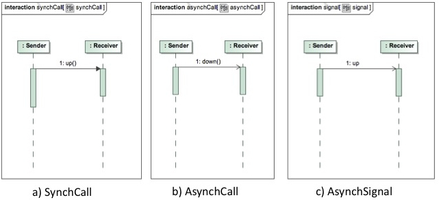
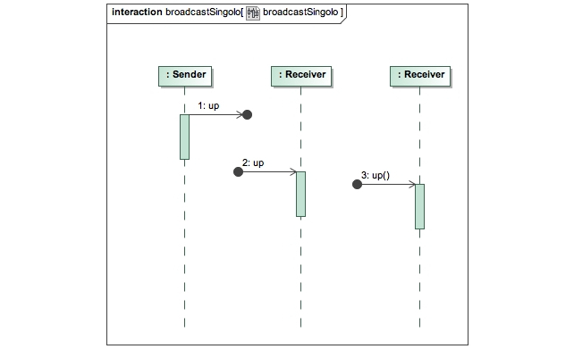
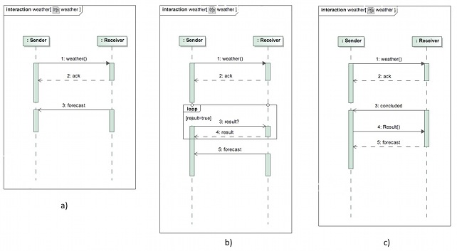

- Entità: anche se UML è nato nell'ambito object-oriented, i sistemi software non sono più costituiti solamente di oggetti che interagiscono tra loro attraverso il meccanismo dell'invocazione di metodo. Oggigiorno si ha sempre più a che fare con sistemi eterogenei e distribuiti, dove l'interazione non può essere rincondotta semplicemente alla mera invocazione di metodo, non si hanno più solo oggetti, ma anche entità più complesse come i componenti e gli agenti intelligenti. Nel seguito quindi parleremo di entità che interagiscono in modo da astrarre dallo specifico tipo di entità che interagiscono tra loro.
- Tool: per le nostre indagini sarà necessario disporre di un tool di modellazione. Da un lato il tool ci permetterà di provare "sul campo" le potenzialità dei diagrammi di sequenza, dall'altro però l'uso di un tool comporta dei vincoli (o dei gradi di libertà) dovuti al grado di aderenza del tool allo standard UML 2.0. Va anche tenuto in considerazione che spesso i progettisti software raramente si preoccupano di fare riferimento alle specifiche ufficiali pubblicate dall'OMG, al limite fanno riferimento a manuali a loro disposizione o alla guida del tool di modellazione, che non sempre seguono alla lettera le direttive della specifica UML 2.0. Ci preoccuperemo quindi anche di evidenziare gli errori che questa condotta può indurre. In particolare sono stati usati due differenti tool per testare i diagrammi di sequenza: MagicDraw UML 16.5 e Jude 5.4 entrambi nella versione Community.
Interazioni di base e diagrammi di sequenza
In questa sezione definiremo la struttura di un semplice sistema campione, al fine di osservare quanti tipi di interazioni elementari si possono esprimere attraverso i diagrammi di sequenza di UML 2.0. A tale fine si è deciso di concentrasi solamente sui messaggi, tralasciando State Invariant, Combined Fragment e vincoli temporali, in quanto i messaggi rappresentano il blocco di costruzione più elementare per modellare le comunicazioni e vogliamo testare proprio le loro potenzialità.
Come sistema scegliamo un semplice Producer/Consumer: lo chiameremo Sender-Receiver, poichè avremo un'entità Sender che ricoprirà il ruolo di Producer, inviando messaggi ad una seconda entità, Receiver, che li processerà e, in base al contenuto, incrementerà o decrementerà un contatore. Sostanzialmente quindi i messaggi che possono essere scambiati sono di due tipi: up e down.
Supponiamo, come primo caso, che Sender debba semplicemente comunicare a Receiver di incrementare (o dualmente di decrementare) il contatore. Le possibili interazioni singole che possiamo rappresentare sono illustrate nella seguente figura.

- (a) Sender richiede l'invocazione di up() a Receiver e si assicura che il messaggio sia arrivato prima di proseguire (comunicazione sincrona);
- (b) Sender invia una richiesta per l'invocazione di down() a Receiver e poi continua la sua esecuzione (comunicazione asincrona);
- (c) Sender invia un segnale up a Receiver e poi continua la sua esecuzione.
I diagrammi mostrati nella figura sono stati realizzati con MagicDraw, in quanto Jude permette di rappresentare solo messaggi sincroni e asincroni, senza specificare se gli asincroni siano call o signal. Studiando il comportamento del tool però, sembrerebbe che vengano gestiti gli AsynchSignal in quanto non è possibile associare ad un messaggio asincrono un messaggio di replay. Questo mette in luce quanto affermato già in precedenza, cioè che i tool non sempre rispettano le direttive OMG.
Come è facile notare dalla figura precedente gli scenari considerati fanno riferimento a comunicazioni singole di tipo 1-1, in quanto le tipologie di messagi da noi utilizzati rappresentavano messaggi completi, cioè messaggi in cui sono noti sia l'evento di invio che quello di ricezione, quindi sia mittente che destinatario. Tali tipi di messaggi non consentono la modellazione di comunicazioni 1-n. Se volessimo rappresentare scenari di interazione singola 1-n potremmo sfruttare i messaggi lost e found come mostrato nella figura sotostante.

Dalla figura emerge chiaramente che questo tipo di rappresentazione è un po' una forzatura, in quanto vengono utilizzati messaggi che di per sè hanno una specifica semantica in una accezione non sempre immediata da capire specialmente se si pensa alla possibilità di impiegare generatori di codice automatici nei quali non c'è posto per semantiche di comunicazioni ambigue.
Passiamo ora ad analizzare uno scenario un più complesso nel quale il Receiver comunicherà al Sender il valore aggiornato del contatore. Le possibili interazioni che possiamo rappresentare sono illustrate nella seguente figura realizzata con MagicDraw.

- (a) Sender richiede l'invocazione di up() a Receiver e si mette in attesa di una risposta che viene inviata attraverso un replay message.
- (b) Sender invia una richiesta per l'invocazione di down() a Receiver, prosegue e poi aspetta la risposta inviata attraverso un replay message.
- (c) Sender invia un segnale up a Receiver, prosegue e poi aspetta una risposta. In questo caso però la risposta sarà inviata attraverso un segnale asincrono in quanto la specifica UML 2.0 non consente di associare a un AsynchSignal un replay message, cosa che invece sembra possibile fare con MagicDraw.
- (d) abbiamo una situazione particolare che mette in luce la limitatezza di UML nella gestione delle interazioni 1-n: osservando il diagramma possiamo vedere che Sender invia un segnale up attraverso l'ausilio di un lost message, per poi aspettare le risposte. Le due entità Receiver percepiscono il segnale attraverso dei found message, elaborano ed inviano la risposta sfruttando di nuovo dei lost message, senza indirizzare specificatamente le risposte a Sender.
Lo scenario d) mette in luce diversi problemi. Il primo riguarda l'identità del mittente della risposta. Se l'identità del Receiver è rilevante ai fini dell'elaborazione di Sender, allora non è possibile sfruttare lo scenario d). Infatti, come si può vedere in figura, le risposte che arrivano al Sender non portano traccia del mittente, quindi il Sender non sarà mai in grado di attribuire con esattezza ad ogni Receiver il rispettivo valore del contatore. Inoltre, come si può vedere in figura, le risposte arrivano in un ordine differente rispetto a quello in cui sono state generate, ma questo lo si riesce a capire solo guardando il contenuto del messaggio. Questo fatto non è sorprendente, se pensiamo a comunicazioni che avvengono in sistemi distribuiti dove la rete gioca un ruolo strategico, non si ha mai certezza sui tempi di consegna dei messaggi, nè sull'effettiva consegna.
Possiamo affermare con certezza che la maggior parte delle comunicazioni che avvengono nei sistemi software sono ormai di tipo distribuito, questo introduce sia problematiche di sicurezza delle comunicazioni, sia problematiche relative alla gestione della perdita o dei ritardi nella consegna dei messaggi.
Per quanto riguarda le problematiche di sicurezza delle comunicazioni attualmente i diagrammi di sequenza non offrono nessun meccanismo per esprimere se una comunicazione debba avvenire o meno in modo sicuro. Di recente è stato proposto un profilo UML, chiamato UMLsec (http://www.jurjens.de/jan/umlsec/index.html) per permettere di modellare sistemi sicuri attraverso UML. Tale profilo pare non sia stato ancora riconosciuto dall'OMG, in quanto esso non risulta tra l'elenco dei profili riportati nel sito ufficiale dell'organizzazione. I diagrammi di sequenza però non sono stati modificati nella loro struttura, ciò che è stato fatto per specificare che una comunicazione è sicura si riconduce semplicemente allo scambio di più messaggi all'interno di un qualsiasi protocollo, i primi dei quali rappresentano lo scambio di chiavi di sessione con cui cifrare i messaggi successivi, che usano una incomprensibile "etichettatura". Questo ovviamente rende molto disagevole l'utilizzo di tali diagrammi e contribuisce ad aumentarne inutilmente la complessità di lettura.
Per quanto riguarda invece la gestione della perdita o dei ritardi nella consegna dei messaggi, UML 2.0 (nella sua versione originale, lo studio di tutti i possibili profili esula dalla nostra indagine) pare non offrire nessun supporto di base per la rappresentazione di questo evento a meno di non ricorrere all'uso di Combined fragment e Interaction use, che però ovviamente aumentano la complessità di lettura dei diagrammi.
Negli scenari presentati fino ad ora abbiamo considerato condizioni ideali. Consideriamo adesso il caso di un sistema non molto reattivo che costringe Sender ad inviare due richieste successive, una di up e una di down prima di riuscire ad ottenere una risposta, come mostrato nella figura sottostante.

A questo punto è spontaneo chiedersi a quale messaggio si riferisce ciascuna delle risposte. Anche supponendo, come è abitudine, che un reply message si riferisca alla call o alla signal che lo precede, la questione non si risolve: infatti, in questo caso, risulterebbe che sono entrambi relativi al messaggio (2), il che è impossibile. Inoltre, nello scenario mostrato in figura, la supposizione che l'ordine delle risposte rispetti l'ordine dei messaggi di richiesta è disattesa. Infatti, guardando il contenuto delle risposte è facile immaginare che il primo dei replay message fa riferimento alla seconda richiesta. Occorre soffermarsi un istante su questo aspetto. Per un umano che deve effettivamente implementare il codice relativo al diagramma in figura è ancora abbastanza semplice riuscire ad interpretare la semantica basandosi sul contenuto del messaggio, tale pratica non sembra comunque corretta in generale in quanto non è sempre possibile associare la risposta alla rispettiva richiesta guardando il contenuto della risposta. Si supponga per esempio che le risposte fossero di tipo booleano, in questo caso non ci sarebbe stato alcun modo di associare risposte con richieste. Se poi pensassimo di utilizzare generatori di codice automatici l'associazione richiesta/risposta basata sul contenuto della risposta diventa assolutamente non praticabile. Un generatore automatico non è in grado di interpretare la semantica della risposta e non potrà mai tradurre in codice effettivo un diagramma ambiguo come quello in figura.
Vediamo quindi da questo semplice esempio una delle limitazioni di UML 2.0: in un diagramma di sequenza basta introdurre un minimo di complessità che diventa impossibile associare in modo univoco un messaggio di replay (o un messaggio che rappresenta una risposta nel caso di AsynchSignal) all'effettivo messaggio di richiesta. Questa ovviamente non è una limitazione da poco, le comunicazioni nei sistemi sono tipicamente basate su protocolli di interazione che possono essere anche molto complessi e non poter associare "nativamente" in modo univoco ciascuna risposta alla sua richiesta causa non pochi problemi nell'interpretazione di un diagramma.
Teniamo a sottolineare che abbiamo usato la parola "nativamente" in quanto è sempre possibile costruire una "sovrastruttura" ad hoc di associazione delle risposte alle richieste, ma questa ovviamente non rappresenta uno standard come invece è la specifica UML, e quindi si avrà la necessità che ogni membro del team di progetto e sviluppo del sistema comprenda (allo stesso modo) la versione modificata dei diagrammi di sequenza. Questo ovviamente va ad impattare sul processo di sviluppo del sistema che diventa più complicato da capire e da replicare al di fuori del team di sviluppo.
Un'altra discussione può scaturire da un ulteriore esempio. Supponiamo di avere a che fare con un Receiver più complesso, in particolare tale Receiver è in grado di gestire messaggi del tipo "Elabora una previsione meteo per i prossimi 5 giorni" (weather). L'elaborazione necessaria per gestire la richiesta richiede abbastanza tempo in quanto fare una previsione meteo richiede una simulazione, e quindi la risposta non potrà essere istantanea. Quindi per questo tipo di interazione può essere opportuno pensare di comunicare al mittente la presa in carico del messaggio ed in un secondo tempo fornire il risultato dell'elaborazione. Quest'ultimo caso è un esempio di protocollo parzialmente specificato, in quanto, una volta dato conferma, la seconda parte dell'interazione può svolgersi in qualsiasi modo vogliamo come riportato nella figura sottostante:

- a) Receiver può inviare un messaggio con il risultato a Sender quando è pronto;
- b) Sender può interrogare a polling Receiver fino a che non ottiene il risultato, in questo caso abbiamo dovuto fare ricorso ad un Combined fragment in quanto non era possibile specificare un loop di attesa utilizzando solo gli strumenti di base dei diagrammi di sequenza;
- c) Receiver può comunicare la fine dell'elaborazione, e poi aspettare che Sender lo interroghi per fornire il risultato.
Ci rendiamo conto da queste osservazioni che la modellazione di questo scenario di comunicazione non ha una soluzione banale. UML 2.0 offre la possibilità di modellare l'interazione con un approccio low-level, utile per poterlo applicare in ogni situazione, ma fragile per gli aspetti presentati e quindi difficilmente applicabile per automatizzare l'implementazione. Come già sottolineato in precedenza, un essere umano è in grado di osservare un diagramma ed agire per risolvere problemi semantici, un generatore di codice invece ha bisogno di concetti e pattern definiti e sufficientemente stabili da essere utilizzati con qualsiasi tecnologia, stile architetturale e paradigma di programmazione. Sostanzialmente si deve avere la possibilità di esprimere l'interazione ad un più alto livello di astrazione, in modo da semplificare il lavoro del progettista.
Interaction Specific Language
- che tipo di comunicazione hanno?
- quali sono le aspettative che hanno A e B?
- Dispatch: messaggio che viene inoltrato da un soggetto (dispatcher) ad uno specifico destinatario, nella speranza che questi lo riceva e lo serva. Nel caso la comunicazione non si concluda con successo il mittente può ricevere un fault message, offrendogli la possibilità di reagire come crede.
- Signal: messaggio di natura asincrona, emesso da un soggetto (sorgente) e affidato al mezzo di trasmissione. In conseguenza uno o più soggetti, se interessati, sono in grado di percepirlo senza che il comportamento di uno influenzi gli altri. La comunicazione realizzata è, almeno concettualmente, broadcast.
- Event: messaggio che non rappresenta un intento comunicativo, ma un accadimento. Può essere sollevato da un soggetto (sorgente) senza nessuna aspettativa: esso infatti lascia una traccia nell'ambiente che può essere percepita dagli altri soggetti, oppure no.
- Request: rappresenta una richiesta che un soggetto (richiedente) fa ad uno o più soggetti, aspettandosi di ricevere almeno una ed al più tante risposte quante sono le richieste inviate. La relativa Response viene recapitata al richiedente sperando che egli la acquisisca.
- Invitation: messaggio che modella una domanda posta a determinati soggetti (uno o più), aspettandosi di ricevere una conferma (Acknowledgment) per ciascun destinatario che accetti l'invito; almeno una.
- Response e Acknowledgement: possono essere usati solo in relazione a Request e Invitation, altrimenti non hanno senso.